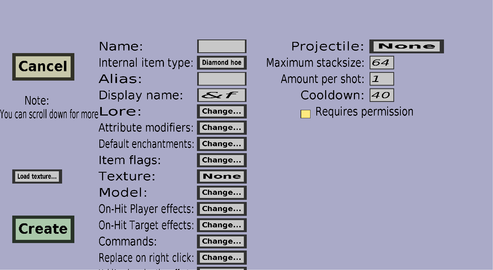

The throwable edit menu can be used to create throwable custom items. Please note that you need to create a custom projectile before you can create a throwable custom item. If you just started creating a new throwable, it should look like this:
This menu has everything the base item edit menu has, but a little more. Throwable items are basically simple custom items that can be thrown. Before you can create a throwable, you need to create at least 1 custom projectile at the 'Projectiles' section of the Editor (just like there is a 'Textures', 'Items', 'Recipes' and 'Drops' section).
This determines which custom projectile players can throw with this item. The button on the right of 'Projectile:' displays the name of the currently selected custom projectile, or 'None' if you haven't chosen one yet. To change the custom projectile, you should click on that button, which will take you to the projectile selection menu where you can choose which custom projectile this item will throw.
As the name suggests, this determines the maximum stacksize of this throwable item. You can choose any integer between 1 and 64, but the stacking may be less 'smooth' if it doesn't match the 'natural' stacksize of the internal item type.
The amount of projectiles players will launch each time they throw the item. The amount does not have any effect on the cooldown or the stacksize: If you change the 'Amount per shot' to 2, players will always fire 2 instances of the Projectile at each throw, but that will only decrease the stacksize by 1 and will put the throwable on the exact same Cooldown as if you kept the 'Amount per shot' 1.
The time in ticks players must wait after throwing the item before it can be thrown again. Whenever a player throws the item, the player won't be able to throw again until the Cooldown has passed.
Whether players need a permission to throw this item. If this is unchecked, any player can throw this item. If this is checked, only players with the customitems.shoot.ITEM_NAME or the customitems.shootall permission can throw this item.